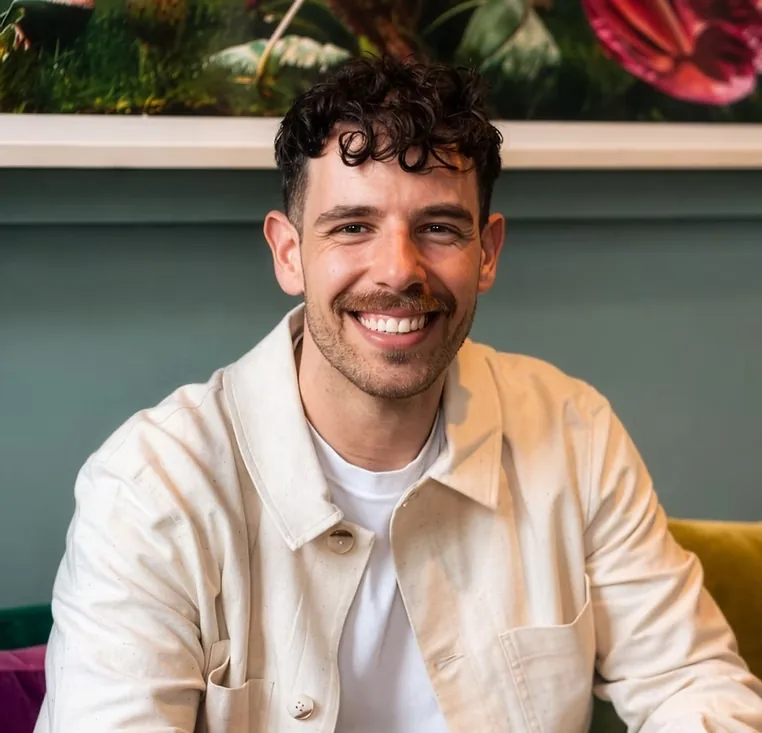
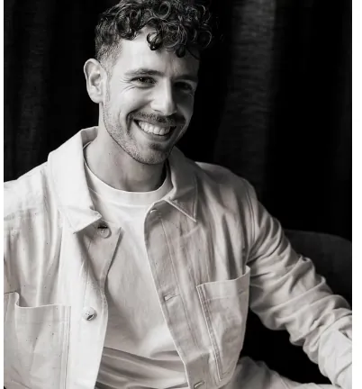

Llamada de presentación
Una conversación breve para ver si encajamos, sin ninguna obligación de continuar.
Pide una llamadaAyudo a las personas a ir más allá de los patrones que se repiten y avanzar con claridad y confianza.

El enfoque es intuitivo y reflexivo, pero también estructurado: cada descubrimiento se une a una acción en la vida real.
Dentro del métodoPara equipos y grupos: Talleres y formación
Una primera conversación. Ponemos nombre a lo que de verdad pasa y vemos si este trabajo encaja contigo.
Trazamos el patrón bajo el problema: dónde empezó, qué protege, qué te cuesta ahora.
Pequeños experimentos deliberados entre sesiones. Entender se convierte en otra forma de vivir.
Construimos la estructura y la confianza que sostienen el cambio cuando terminan las sesiones.
Una conversación breve para ver si encajamos, sin ninguna obligación de continuar.
Pide una llamadaSesiones centradas en tus patrones, en la claridad y en un cambio que dure. En Londres u online.
Sobre el coaching 1:1Sesiones interactivas que combinan reflexión, creatividad y herramientas prácticas.
Sobre los talleresEstar en presencia de Alex me reconfortaba.

Soy Alex Moudiotis, coach afincado en Londres con experiencia en la enseñanza y las artes. Estudié Bellas Artes en la Universidad Aristóteles de Salónica y tengo un Máster Integrado en Artes Visuales y Aplicadas.
Empezar de cero en un país nuevo me enseñó lo que hace falta para hablar desde tu propia verdad. Ese es el trabajo que hago con las personas: a menudo tras una ruptura, un cambio profesional o una transición vital.
Cuéntame un poco dónde estás. Leo cada mensaje personalmente y respondo por email.
Emailinwardlab@gmail.com
No. La terapia suele mirar atrás para sanar; el coaching mira hacia delante para avanzar. Si algo necesita apoyo terapéutico, Alex te lo dirá con honestidad y te ayudará a encontrar a la persona adecuada.
No. Casi todo el mundo llega con una sensación, no con un plan. En la llamada de presentación le ponéis palabras juntos.
Sí. Alex trabaja con personas en Londres y online.
Una conversación breve sobre dónde estás y qué te gustaría cambiar. Te haces una idea de cómo trabaja Alex y decides después si seguir, sin obligación.